Chapter 4 Low dimensional visualizations
4.1 Why plotting?
Plotting is crucial to data science because:
It facilitates making new observations by discovering associations or patterns in the data (the initial step of the scientific method).4 The human brain is particularly good at detecting patterns in images, this what we evolved for. Visual display, over starring at table of numbers is very effective
It facilitates communicating findings
Only relying on summary statistics (mean, correlation, etc.) is dangerous. Summary statistics reduce data to a single number, therefore carry much less information than 2D representations. Section 4.1.1 provide examples
It helps debugging either the code by visually checking whether particular operations performed as expected on the data, or by identifying “bugs in the data” such as wrong entries or outliers. Section 4.1.2 provides an example
4.1.1 Plotting versus summary statistics
What do those 13 datasets have in common?


All those plots, including the infamous datasaurus share the same following statistics:
- X mean: 52.26
- Y mean: 47.83
- X standard deviation: 16.76
- Y standard deviation: 29.93
- Pearson correlation: -0.06
When only looking at the statistics, we would have probably wrongly assumed that the datasets were identical. This example highlights why it is important to visualize data and not just rely on summary statistics. See [https://github.com/lockedata/datasauRus] or Anscombe’s quartet [https://en.wikipedia.org/wiki/Anscombe%27s_quartet] for more examples.
4.1.2 Plotting helps finding bugs in the data
Consider the following vector height containing (hypothetical) height measurements for 500 adults:
head(height_dt, n=5)## height
## 1: 1.786833
## 2: 1.715319
## 3: 1.789841
## 4: 1.787259
## 5: 1.748659Calculating the mean height returns the following output:
height_dt[, mean(height)]## [1] 2.056583There is something obviously wrong. We can plot the data to investigate.
# You can adjust the number of bins with the bins parameter
ggplot(height_dt , aes(height)) + geom_histogram() + mytheme
There is an outlier (height=165). One particular value has probably been entered in centimeters rather than meters. As a result, the mean is inflated.
A quick way to fix our dataset is to remove the outlier, for instance with:
height_dt <- height_dt[height < 3]Now our plotted data seems more realistic and the mean height makes sense.
height_dt[, mean(height)]## [1] 1.730043ggplot(height_dt , aes(height)) + geom_histogram() + mytheme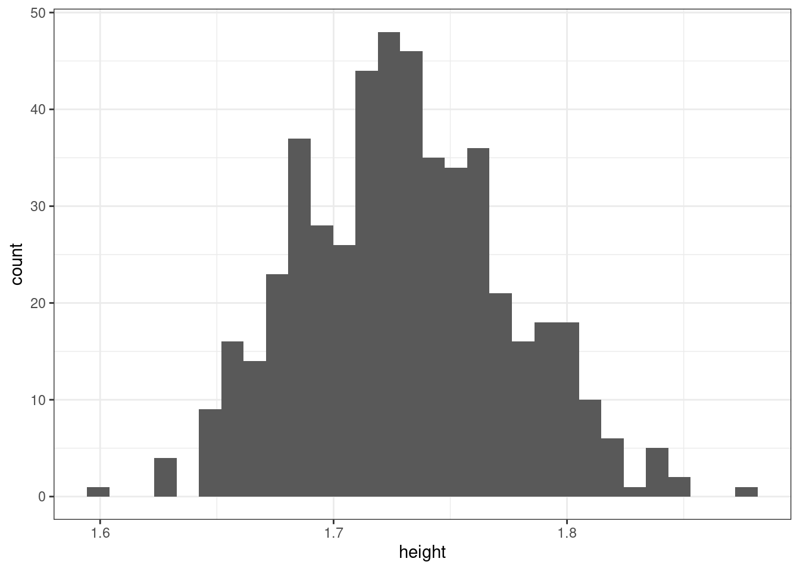
While developing analysis scripts, we recommend to frequently visualize the data to make sure no mistake in the input or during the processing occurred.
4.2 Grammar of graphics
The grammar of graphics is a visualization theory developed by Leland Wilkinson in 1999. It has influenced the development of graphics and visualization libraries alike. It is based on 3 key principles:
- Separation of data from aesthetics (e.g. x and y-axis, color-coding)
- Definition of common plot/chart elements (e.g. scatter plots, box-plots, etc.)
- Composition of these common elements (one can combine elements as layers)
The library ggplot2 is a powerful implementation of the grammar of graphics. It has become widely used by R programmers.
Here is a sophisticated motivating example. The plot shows the relationship between per-capita gross domestic product (GDP) and life expectancy at birth for the years 1997 and 2007 from the dataset gapminder:
#install.packages('gapminder')
library(gapminder)
gm_dt <- as.data.table(gapminder)[year %in% c(1977, 2007)]
ggplot(data=gm_dt, aes(x=gdpPercap, y=lifeExp)) +
geom_point(aes(color=continent, size=pop)) +
facet_grid(~year) + scale_x_log10() +
labs(y="Life expectancy at birth", x="per-capita GDP", size = 'Population') + mytheme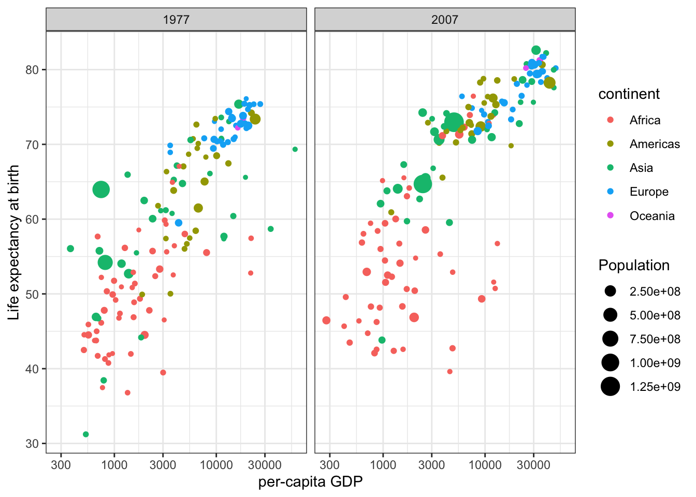
We may, for instance, use such visualization to find differences in the life expectancy of each country and each continent.
The following section shows how to create such a sophisticated plot step by step.
4.3 Components of the layered grammar
Grammar of graphics composes plots by combining layers. The major layers are:
- Always used:
Data: data.table (or data.frame) object where columns correspond to variables
Aesthetics: mapping of data to visual characteristics - what we will see on the plot (aes)
- position (x,y), color, size, shape, transparency
Geometric objects: geometric representation defining the type of the plot data (geom_)
- points, lines, boxplots, …
- Often used:
Scales: for each aesthetic, describes how a visual characteristic is converted to display values (scale_)
- log scales, color scales, size scales, shape scales, …
Facets: describes how data is split into subsets and displayed as multiple sub graphs (facet_)
- Useful, but with care:
Stats: statistical transformations that typically summarize data (stat)
- counts, means, medians, regression lines, …
- Domain-specific usage:
Coordinate system: describes 2D space that data is projected onto (coord_)
- Cartesian coordinates, polar coordinates, map projections, …
4.3.1 Components of the grammar of graphics
The following components are considered in the context of the grammar of graphics:
Data: data.table (or data.frame) object where columns correspond to variables
Aesthetics: visual characteristics that represent data (aes)
- e.g. position, size, color, shape, transparency, fill
Layers: geometric objects that represent data (geom_)
- e.g. points, lines, polygons, …
Scales: for each aesthetic, describes how visual characteristic is converted to display values (scale_)
- e.g. log scales, color scales, size scales, shape scales, …
Facets: describes how data is split into subsets and displayed as multiple subgraphs (facet_)
Stats: statistical transformations that typically summarize data (stat)
- e.g. counts, means, medians, regression lines, …
Coordinate system: describes 2D space that data is projected onto (coord_)
- e.g. Cartesian coordinates, polar coordinates, map projections, …
4.3.2 Defining the data and layers
In our example, we consider the gapminder dataset, which serves as the data component of our visualization. We want to plot the variable lifeExp against the variable gdpPercap. First, we have a look at the first lines of the dataset:
head(gm_dt[, .(country, continent, gdpPercap, lifeExp, year)])## country continent gdpPercap lifeExp year
## 1: Afghanistan Asia 786.1134 38.438 1977
## 2: Afghanistan Asia 974.5803 43.828 2007
## 3: Albania Europe 3533.0039 68.930 1977
## 4: Albania Europe 5937.0295 76.423 2007
## 5: Algeria Africa 4910.4168 58.014 1977
## 6: Algeria Africa 6223.3675 72.301 2007For starting with the visualization we initiate a ggplot object which generates a plot with background:
ggplot()
Next, we can define the data to be plotted, which needs to be a data.table (or data.frame) object and the aes() function. This aes() function defines which columns in the data.table object map to x and y coordinates and if they should be colored or have different shapes and sizes based on the values in a different column. These elements are called “aesthetic” elements, which we observe in the plot.
ggplot(data = gm_dt, aes(x=gdpPercap, y=lifeExp)) 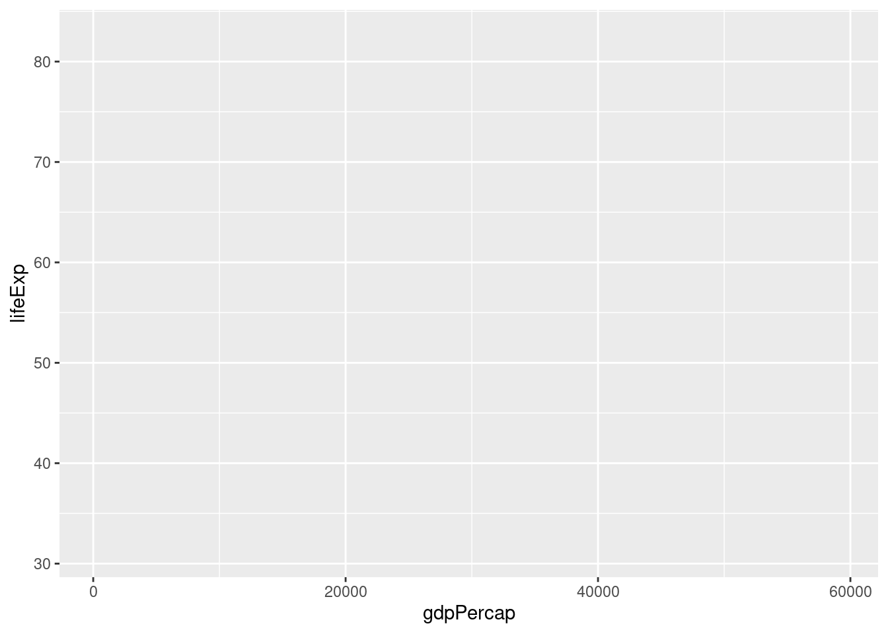
As we can see, we obtain a plot with labeled axes and ranges. We want to visualize the data with a simple scatter plot. In a scatter plot, the values of two variables are plotted along two axes. Each pair of values is represented as a point. In R, a scatter plot can be plotted with ggplot2 using the function geom_point. We want to construct a scatter plot containing the gdpPercap on the x-axis and the lifeExp on the y-axis. For this we combine the function geom_point() to the previous line of code with the operator +:
ggplot(data = gm_dt, aes(x=gdpPercap, y=lifeExp)) + geom_point()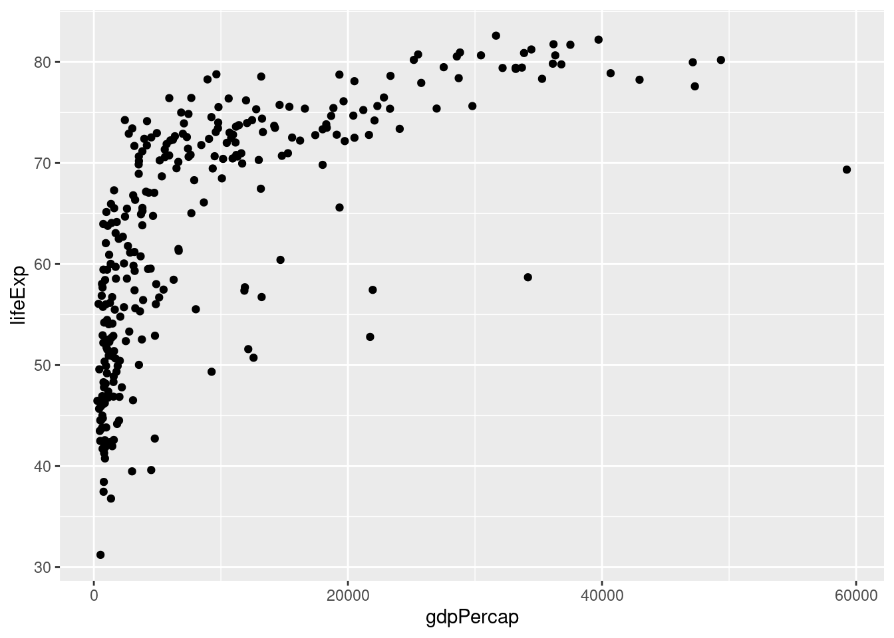
One of the advantages of plotting with ggplot is that it returns an object which can be stored (e.g. in a variable called p). The stored object can be further edited.
p <- ggplot(data = gm_dt, aes(x=gdpPercap, y=lifeExp)) + geom_point()We can inspect the names of elements of the stored object with names():
names(p)## [1] "data" "layers" "scales" "mapping"
## [5] "theme" "coordinates" "facet" "plot_env"
## [9] "labels"We can also save the ggplot object with the help of the function saveRDS(). We can read the saved object again in a future R session with the help of the function readRDS(). Here is an example where we save a ggplot object, then load it, and finally add a horizontal line at y=50 to it:
saveRDS(p, "your/favorite/path/my_first_plot.rds") # save to disk
p2 <- readRDS("your/favorite/path/my_first_plot.rds") # load from disk (can be in another session)
p2 + geom_hline(yintercept = 50)
4.3.3 Mapping of aesthetics
4.3.3.1 Mapping of color, shape and size
We can easily map variables to different colors, sizes or shapes depending on the value of the specified variable. To assign each point to its corresponding continent, we can define the variable continent as the color attribute in aes() as follows:
ggplot(data = gm_dt, aes(x=gdpPercap, y=lifeExp, color=continent)) + geom_point()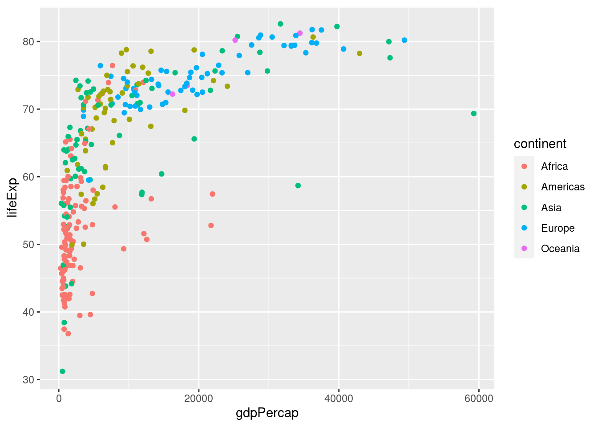
American color or British colour are both acceptable as the argument specification.
Instead of color, we can also use different shapes for characterizing the different continents in the scatter plot. For this we specify the shape argument in aes() as follows:
ggplot(data = gm_dt, aes(x=gdpPercap, y=lifeExp, shape=continent)) + geom_point()
Additionally, we distinguish the population of each country by giving a size to the points in the scatter plot:
ggplot(data = gm_dt, aes(x=gdpPercap, y=lifeExp, color=continent, size=pop)) +
geom_point()
4.3.3.2 Global versus individual mapping
Mapping of aesthetics in aes() can be done globally or at individual layers.
In the previous plot we defined the variables gdpPercap and lifeExp in the aes() function inside ggplot() for a global definition. Global mapping is inherited by default to all geom layers (geom_point in the previous example), while mapping at individual layers is only recognized at that layer. For example, we define the aes(x=gdpPercap, y=lifeExp) globally, but the color attributes only locally for the layer geom_point:
ggplot(data = gm_dt, aes(x=gdpPercap, y=lifeExp)) +
geom_point(aes(color=continent, size=pop))
Note that individual layer mapping cannot be recognized by other layers. For instance, we can add another layer for smoothing with stat_smooth().
# this doesn't work as stat_smooth didn't know aes(x , y)
ggplot(data = gm_dt) +
geom_point(aes(x=gdpPercap, y=lifeExp)) +
stat_smooth()## Error: stat_smooth requires the following missing aesthetics: x and y# this works but is redundant
ggplot(data = gm_dt) +
geom_point(aes(x=gdpPercap, y=lifeExp)) +
stat_smooth(aes(x=gdpPercap, y=lifeExp))
# the common aes(x, y) shared by all the layers can be put in the ggplot()
ggplot(data = gm_dt, aes(x=gdpPercap, y=lifeExp, color=continent)) +
geom_point(aes(size=pop)) +
stat_smooth()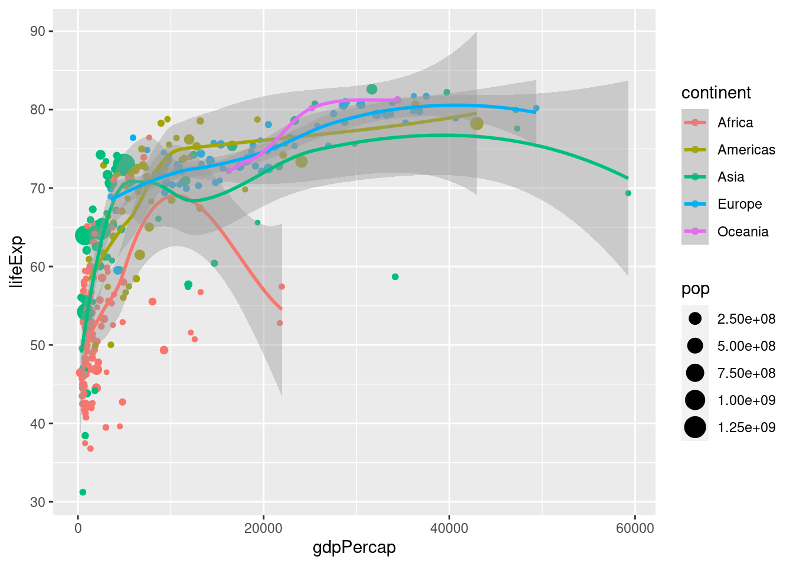
4.3.4 Facets, axes and labels
For comparing the data from the year 1977 with the data from 2007, we can add a facet with facet_wrap():
ggplot(data = gm_dt, aes(x=gdpPercap, y=lifeExp, color=continent, size=pop)) +
geom_point() + facet_wrap(~year)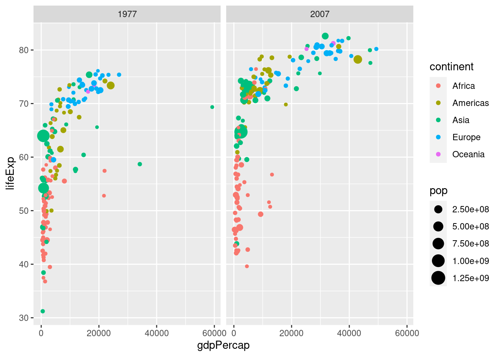
For a better visualization of the data points, we can consider log scaling, which we will describe more in detail later. Finally, we can adapt the axes labels of the plot with labs() and define a theme of our plot:
mysize <- 15
mytheme <- theme(
axis.title = element_text(size=mysize),
axis.text = element_text(size=mysize),
legend.title = element_text(size=mysize),
legend.text = element_text(size=mysize)
) + theme_bw()
ggplot(data=gm_dt, aes(x=gdpPercap, y=lifeExp)) + geom_point(aes(color=continent, size=pop)) +
facet_grid(~year) + scale_x_log10() +
labs(x="per-capita GDP", y="Life expectancy at birth", size = 'Population') + mytheme
We remark here that ggplot2 allows many further adaptions to plots, such as specifying axis breaks and limits. Some of these are covered in the appendix at the end of this script.
4.4 Different types of one- and two-dimensional plots
In the previous examples, we had a look at scatter plots which are suitable for plotting the relationship between two continuous variables. However, there are many more types of plots (e.g. histograms, boxplots) which can be used for plotting in different scenarios. Mainly, we distinguish between plotting one or two variables and whether the variables are continuous or discrete.
4.4.1 Plots for one single continuous variable
4.4.1.1 Histograms
A histogram represents the frequencies of values of a variable bucketed into ranges. It takes as input numeric variables only. A histogram is similar to a bar plot but the difference is that it groups the values into continuous ranges. Each bar in a histogram represents the height of the number of values present in that range. Each bar of the histogram is called a bin.
We can construct a histogram of the Human Development Index (HDI) in the ind dataset with the function geom_histogram():
ggplot(ind, aes(HDI)) + geom_histogram() + mytheme
By default, the number of bins in ggplot2 is 30. We can simply change this by defining the number of desired bins in the bins argument of the geom_histogram() function:
ggplot(ind, aes(HDI)) + geom_histogram(bins=10) + mytheme
4.4.1.2 Density plots
Histograms are sometimes not optimal to investigate the distribution of a variable due to discretization effects during the binning process. A variation of histograms is given by density plots. They are used to represent the distribution of a numeric variable. These distribution plots are typically obtained by kernel density estimation to smoothen out the noise. Thus, the plots are smooth across bins and are not affected by the number of bins, which helps create a more defined distribution shape.
As an example, we can visualize the distribution of the Human Development Index (HDI) in the ind dataset by means of a density plot with geom_density():
ggplot(ind, aes(HDI)) + geom_density() + mytheme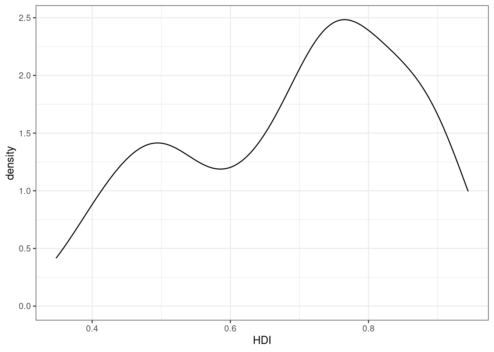
The bw argument of the geom_density() function allows to tweak the bandwidth of a density plot manually. The default option is a bandwidth rule, which is usually a good choice.
Setting a small bandwidth on the previous plot has a huge impact on the plot:
ggplot(ind, aes(HDI)) + geom_density(bw=0.01) + ggtitle('Small bandwidth') +
mytheme
Setting a large bandwidth has also a huge impact on the plot:
ggplot(ind, aes(HDI)) + geom_density(bw=1) + ggtitle('Large bandwidth') +
mytheme
Thus, we should be careful when changing the bandwidth, since we can get a wrong impression from the distribution of a continuous variable.
4.4.1.3 Boxplots
Boxplots can give a good graphical insight into the distribution of the data. They show the median, quartiles, and how far the extreme values are from most of the data.
Five values are essential for constructing a boxplot:
- the median: the center of the data, middle value of a sorted list, 50% quartile of the data
- the first quartile (Q1): 25% quartile of the data
- the third quartile (Q3): 75% quartile of the data
- the interquartile range (IQR): the distance between Q1 and Q3
Every boxplot has lines at Q1, the median, and Q3, which together build the box of the boxplot. The other major feature of a boxplot is its whiskers. The whiskers are determined with the help of the IQR. Here, we compute 1.5 × IQR below Q1 and 1.5 × IQR above Q3. Anything outside of this range is called an outlier. We then draw lines at the smallest and largest point within this subset (Q1 - 1.5 × IQR to Q3 + 1.5 × IQR) from the dataset. These lines define our whiskers which reach the most extreme data point within \(\pm 1.5\times IQR\).

It is possible to not show the outliers in boxplots, as seen in the visualization before. However, we strongly recommend keeping them. Outliers can reveal interesting data points (discoveries “out of the box”) or bugs in data preprocessing.

For instance, we can plot the distribution of a variable x with a histogram and visualize the corresponding boxplot:

Boxplots are particularly suited for plotting non-Gaussian symmetric and non-symmetric data and for plotting exponentially distributed data. However, boxplots are not well suited for bimodal data, since they only show one mode (the median). In the following example, we see a bimodal distribution in the histogram and the corresponding boxplot, which does not properly represent the distribution of the data.
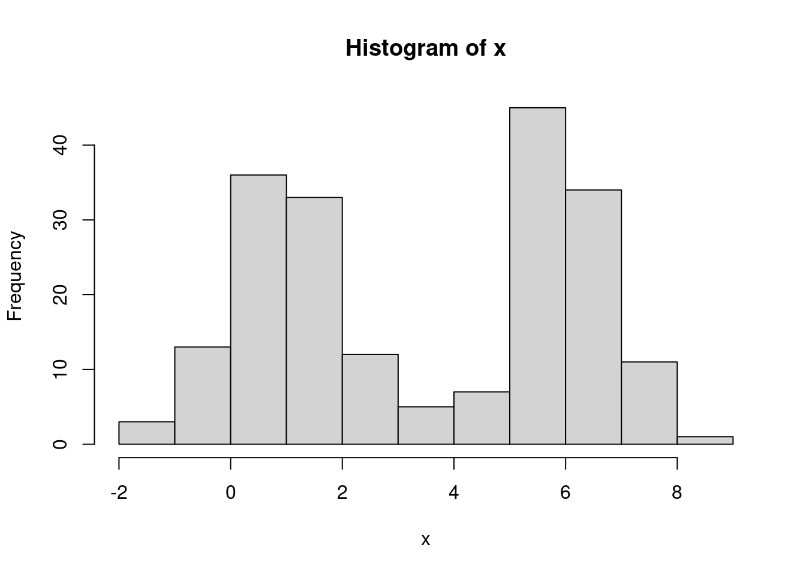
4.4.2 Plots for two variables: one continuous, one discrete
4.4.2.1 Barplots
Barplots are often used to highlight individual quantitative values per category. Bars are visual heavyweights compared to dots and lines. In a barplot, we can combine two attributes of 2-D location and line length to encode quantitative values. In this manner, we can focus the attention primarily on individual values and support the comparison of one to another.
For creating a barplot with ggplot2 we can use the function geom_bar(). In the next example, we visualize the number of countries (defined in the y axis) per continent (defined in the x axis).
ggplot(countries_dt, aes(Continent, Number_countries)) +
geom_bar(stat = 'identity', width = .7) + mytheme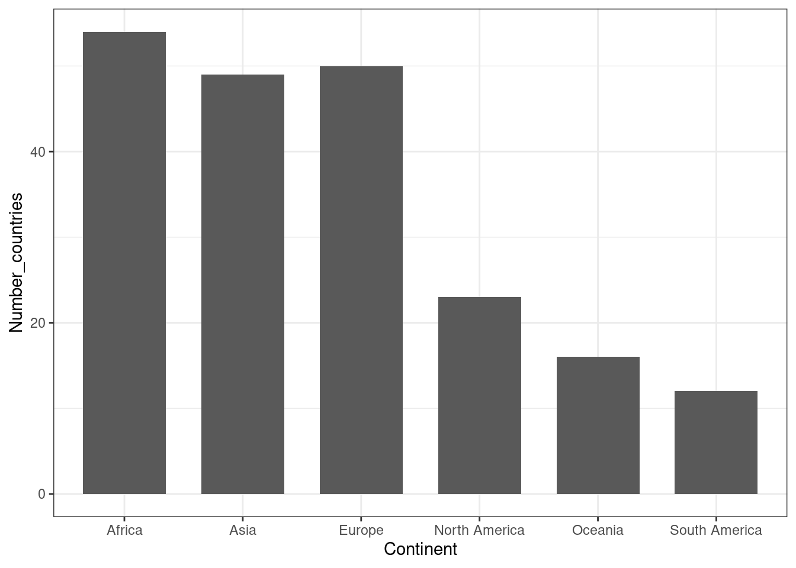
4.4.2.2 Barplots with errorbars
Visualizing uncertainty is important, otherwise, barplots with bars as a result of an aggregation can be misleading. One way to visualize uncertainty is with error bars.
As error bars, we can consider the standard deviation (SD) and the standard error of the mean (SEM). We remark that SD and SEM are completely different concepts. On the one hand, SD indicates the variation of quantity in the sample. On the other hand, SEM represents how well the mean is estimated.
The central limit theorem implies that: \(SEM = SD / \sqrt{(n)}\) , where \(n\) is the sample size (number of observations). With large \(n\), SEM tends to 0.
In the following example, we plot the average highway miles per gallon hwy per vehicle class class including error bars computed as the average plus/minus standard deviation of hwy:
as.data.table(mpg) %>%
.[, .(mean = mean(hwy),
sd = sd(hwy)),
by = class] %>%
ggplot(aes(class, mean, ymax=mean+sd, ymin=mean-sd)) +
geom_bar(stat='identity') +
geom_errorbar(width = 0.3) + mytheme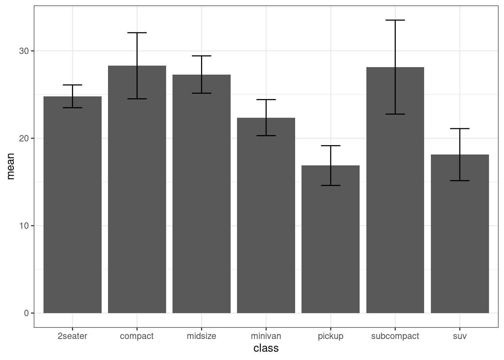
4.4.2.3 Boxplots by category
As illustrated before, boxplots are well suited for plotting one continuous variable. However, we can also use boxplots to show distributions of continuous variables with respect to some categories. This can be particularly interesting for comparing the different distributions of each category.
For instance, we want to visualize the highway miles per gallon hwy for every one of the 7 vehicle classes (compact, SUV, minivan, etc.). For this, we define the categorical class variable on the x axis and the continuous variable hwy on the y axis.
ggplot(mpg, aes(class, hwy)) +
geom_boxplot() + mytheme
We can also add dots (or points) to a boxplot using the functions geom_dotplot() or geom_jitter():
p <- ggplot(mpg, aes(class, hwy)) + geom_boxplot() + mytheme
p + geom_dotplot(binaxis='y', stackdir='center', dotsize=0.3)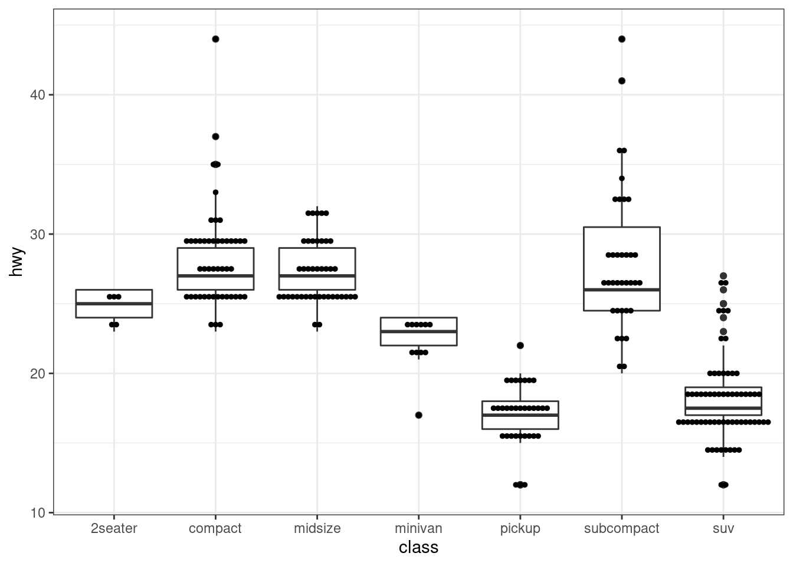
p + geom_jitter()
4.4.2.4 Violin plots
A violin plot is an alternative to the boxplot for visualizing one continuous variable (grouped by categories). An advantage of the violin plot over the boxplot is that it also shows the entire distribution of the data. This can be particularly interesting when dealing with multimodal data.
For a direct comparison, we show a violin plot for the hwy grouped by class as before with the help of the function geom_violin():
ggplot(mpg, aes(class, hwy)) +
geom_violin() + mytheme
4.4.2.5 Beanplots
Another alternative to the popular boxplot is the beanplot. A beanplot has the advantage that the individual observations are shown as small lines in a one-dimensional scatter plot. Moreover, the estimated density of the distributions is visible in a beanplot. It is easy to compare different groups of data in a beanplot and to see if a group contains enough observations to make the group interesting from a statistical point of view.
For creating beanplots in R, we can use the package ggbeeswarm. We use the function geom_besswarm() to create a beanplot to visualize once again the hwy grouped by class:
# install.packages("ggbeeswarm")
library(ggbeeswarm)
ggplot(mpg, aes(class, hwy)) +
geom_beeswarm() + mytheme
We remark that beanplots are useful only up to a certain number of data points. The creation of beanplots for larger datasets may become too expensive.
4.4.3 Plots for two continuos variables
4.4.3.1 Scatter plots
Scatter plots are a useful plot type for easily visualizing the relationship between two continuous variables. Here, dots are used to represent pairs of values corresponding to the two considered variables. The position of each dot on the horizontal (x) and vertical (y) axis indicates values for an individual data point.
In the next example, we analyze the relationship between the engine displacement in liters displ and the highway miles per gallon hwy from the mpg dataset:
ggplot(mpg, aes(displ, hwy)) + geom_point() + mytheme
We can modify the previous plot by coloring the points depending on the vehicle class:
ggplot(mpg, aes(displ, hwy, color=class)) + geom_point() + mytheme
Sometimes, too many colors can be hard to distinguish. In such cases, we can use facet to separate them into different plots:
ggplot(mpg, aes(displ, hwy)) + geom_point() + facet_wrap(~class) + mytheme
4.4.3.1.1 Text labeling
For labeling the individual points in a scatter plot, ggplot2 offers the function geom_text(). However, these labels tend to overlap. To avoid this, we can use the library ggrepel which offers a better text labeling through the function geom_text_repel().
We first show the output of the classic text labeling with geom_text() for a random subset of 40 observations of the dataset mpg. Here we plot the engine displacement in liters displ vs. the highway miles per gallon hwy and label by manufacturer:
set.seed(12)
mpg_subset <- mpg[sample(1:nrow(mpg), 30, replace=FALSE),]
ggplot(mpg_subset, aes(displ, hwy, label=manufacturer)) + geom_point() +
geom_text() + mytheme
As seen in the previous illustration, the text labels overlap. This complicates understanding the plot. Therefore, we exchange the function geom_text() by geom_text_repel() from the library ggrepel:
library(ggrepel)
ggplot(mpg_subset, aes(displ, hwy, label=manufacturer)) +
geom_point() + geom_text_repel() + mytheme
4.4.3.1.2 Log scaling
We consider another example where we want to plot the weights of the brain and body of different animals using the dataset Animals. This is what we obtain after creating a scatterplot.
library(MASS) # to access Animals data sets
animals_dt <- as.data.table(Animals)
ggplot(animals_dt, aes(x = body, y = brain)) + geom_point() + mytheme
We can clearly see that there are a few points which are notably larger than most of the points. This makes it harder to interpret the relationships between most of these points. In such cases, we can consider logarithmic transformations and/or scaling. More precisely, a first idea would be to manually transform the values into a logarithmic space and plot the transformed values instead of the original values:
animals_dt[, c('log_body', 'log_brain') := list(log10(body), log10(brain)) ]
ggplot(animals_dt, aes(x = log_body, y = log_brain)) + geom_point() + mytheme
Alternatively, ggplot2 offers to simply scale the data without the need to transform. This can be done with the help of the functions scale_x_log10() and scale_y_log10() which allow appropriate scaling and labeling of the axes:
ggplot(animals_dt, aes(x = body, y = brain)) + geom_point() +
scale_x_log10() + scale_y_log10() + mytheme
4.4.3.2 Density plots in 2D
Using scatterplots can become problematic when dealing with a huge number of points. This is due to the fact that points may overlap and we cannot clearly see how many points are at a certain position. In such cases, a 2D density plot is particularly well suited. This plot counts the number of observations within a particular area of the 2D space.
The function geom_hex() can be used for creating 2D density plots in R:
x <- rnorm(10000); y=x+rnorm(10000)
data.table(x, y) %>% ggplot(aes(x, y)) +
geom_hex() + mytheme
4.4.3.3 Line plots
A line plot can be considered for connecting a series of individual data points or to display the trend of a series of data points. This can be particularly useful to show the shape of data as it flows and changes from point to point. We can also show the strength of the movement of values up and down through time.
As an example we show the connection between the individual datapoints of unemployment rate over the years:
ggplot(economics, aes(date, unemploy / pop)) +
geom_line() + mytheme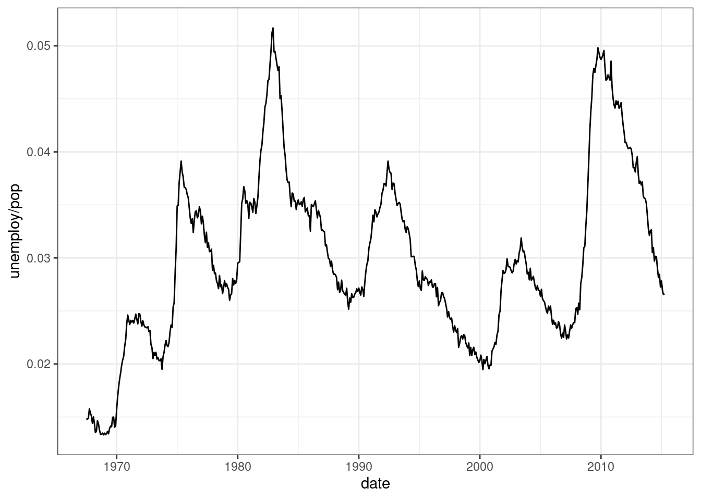
4.5 Further plots for low dimensional data
4.5.1 Plot matrix
A so-termed plot matrix is useful for exploring the distributions and correlations of a few variables in a matrix-like representation. Here, for each pair of considered variables, a scatterplot is created and the correlation coefficient is computed. For every single variable, a density plot is created for showing the respective distribution.
We can use the function ggpairs() from the library GGally for constructing plot matrices. As an example, we analyze the variables displ, cyl, cty and hwyfrom the dataset mpg:
library(GGally)
ggpairs(mpg, columns = c("displ","cyl","cty","hwy")) + mytheme
We remark that this plot is not well suited for comparing more than a few variables.
4.5.2 Correlation plot
A correlation plot is a graphical representation of a correlation matrix. It is useful to highlight the most correlated variables in a dataset. In this plot, correlation coefficients are colored according to the value. A correlation matrix can be also reordered according to the degree of association between variables.
Correlation plots are also called “corrgrams” or “correlograms.” As an example, we visualize the correlation between the variables of the dataset mtcars with the help of the function ggcorr() from the library GGally:
ggcorr(mtcars, geom = 'circle') 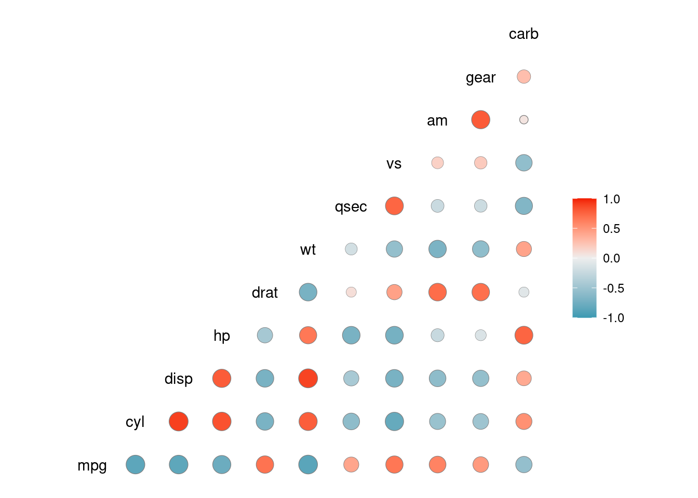
4.6 Summary
This first chapter of data visualization covered the basics of the grammar of graphics and ggplot2 to plot low dimensional data. We introduced the different types of plots such as histograms, boxplots or barplots and discussed when to use which plot.
4.7 Resources
The ggplot book: https://ggplot2-book.org/
Plotting libraries:
Udacity’s Data Visualization and D3.js
Graphics principles